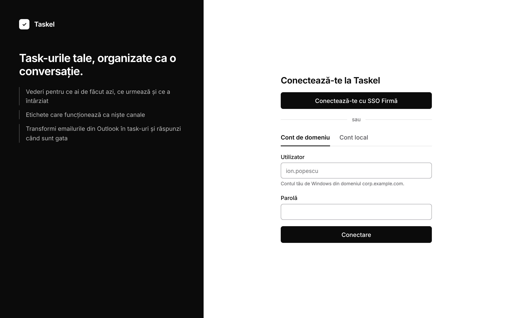

Instalarea pe Windows Server cu IIS și PostgreSQL, fără acces la internet, plus pregătirea unui calculator de dezvoltare offline.
Pe Windows, IIS ține locul lui nginx: servește interfața și pornește singur serviciul API prin modulul ASP.NET Core. Baza de date este PostgreSQL, ca pe Linux.
Browser / Outlook
│ HTTPS (https://taskel.firma.ro)
▼
IIS · site „Taskel” (C:\Taskel\www) ──► fișierele interfeței
│ /api/* prin ASP.NET Core Module
▼
Taskel.Api.exe (C:\Taskel\api), pornit și oprit de IIS
├──► PostgreSQL date, setări, chei de criptare
├──► C:\TaskelData fișierele atașate, jurnale
└──► SMTP, Active Directory, Keycloak (opțional)
Ghidul presupune că serverul nu are acces la internet. Tot ce trebuie se pregătește pe un calculator conectat și se copiază pe server: codul sursă (care conține deja pachetele NuGet și npm, în folderul offline) și kiturile de instalare ale programelor.
Setările aplicației sunt aceleași ca pe Linux; aici diferă doar locul în care se pun (fișierul web.config, în loc de un fișier .env). Setările făcute ulterior din interfață (email, Active Directory, Keycloak) sunt descrise în Manualul administratorului.
| Componentă | Cerință |
|---|---|
| Sistem de operare | Windows Server 2019, 2022 sau 2025, pe 64 de biți. Pentru teste merge și Windows 10/11. |
| Server web | IIS 10 (rolul Web Server din Windows). |
| Rulare | ASP.NET Core 10 Hosting Bundle. |
| Bază de date | PostgreSQL 16 sau mai nou, pe același server sau pe altul. |
| Compilare | .NET 10 SDK și Node.js 22. Pot fi pe server sau pe alt calculator, de unde copiați rezultatul. |
| Resurse | Pentru câteva zeci de utilizatori: 2 procesoare, 4 GB memorie, plus spațiul pentru fișierele atașate. |
| Certificat | Un certificat TLS pentru numele aplicației (de exemplu taskel.firma.ro), ca fișier .pfx. |
git clone https://github.com/Hummingbird005/Taskel.git C:\src\TaskelClona conține folderul offline, cu toate pachetele NuGet (pentru serviciul API, teste și unealta de migrări) și cache-ul npm (pentru interfață, cu componentele native pentru Windows și Linux). Nu mai e nevoie de nimic de pe internet pentru compilare.
C:\src\Taskel. Cache-ul npm are nume de fișiere lungi, iar Windows refuză căile mai lungi de 260 de caractere dacă acestea nu sunt activate explicit.Descărcați versiunea pentru Windows x64 a fiecărui program:
| Program | De unde | Necesar pentru |
|---|---|---|
| ASP.NET Core 10 Hosting Bundle | dotnet.microsoft.com/download/dotnet/10.0, secțiunea ASP.NET Core Runtime → Hosting Bundle | rulare |
| PostgreSQL 17 | www.postgresql.org/download/windows (instalatorul EDB) | rulare |
| .NET 10 SDK | dotnet.microsoft.com/download/dotnet/10.0, secțiunea SDK, Windows x64 Installer | compilare |
| Node.js 22 LTS | nodejs.org/en/download, Windows Installer (.msi), x64 | compilare |
| Git | git-scm.com/downloads | doar pentru dezvoltare |
Pe un Windows 10/11 cu winget, aceleași kituri se pot descărca dintr-o fereastră PowerShell:
$d = "C:\TaskelKituri"
winget download --id Microsoft.DotNet.HostingBundle.10 -d $d
winget download --id PostgreSQL.PostgreSQL.17 -d $d
winget download --id Microsoft.DotNet.SDK.10 -d $d
winget download --id OpenJS.NodeJS.22 -d $dCopiați pe server, pe un mediu de stocare, folderul C:\src\Taskel și kiturile.
Comenzile se rulează în PowerShell, ca administrator. Exemplele folosesc adresa taskel.firma.ro, folderele C:\Taskel (aplicația) și C:\TaskelData (datele). Înlocuiți-le cu ale voastre.
Pe Windows Server:
Install-WindowsFeature Web-Server, Web-Static-Content, Web-Default-Doc, Web-Http-Errors, `
Web-Http-Logging, Web-Stat-Compression, Web-Filtering, Web-Http-Redirect, Web-Mgmt-ConsolePe Windows 10/11 (doar pentru teste):
Enable-WindowsOptionalFeature -Online -All -FeatureName IIS-WebServerRole, IIS-StaticContent, `
IIS-DefaultDocument, IIS-HttpErrors, IIS-HttpLogging, IIS-HttpCompressionStatic, `
IIS-RequestFiltering, IIS-HttpRedirect, IIS-ManagementConsoleInstalați-l după IIS: așa își înregistrează modulul în IIS. Apoi reporniți IIS.
C:\TaskelKituri\dotnet-hosting-10.0.x-win.exe /quiet /norestart
net stop was /y
net start w3svcpostgres. Stack Builder nu este necesar.& "C:\Program Files\PostgreSQL\17\bin\psql.exe" -U postgres -h localhost -c `
"CREATE ROLE taskel LOGIN PASSWORD 'o-parola-lunga-si-unica';"
& "C:\Program Files\PostgreSQL\17\bin\psql.exe" -U postgres -h localhost -c `
"CREATE DATABASE taskel OWNER taskel;"Tabelele le creează aplicația la prima pornire.
Pe server sau pe alt calculator cu .NET 10 SDK și Node.js 22 instalate (kiturile din capitolul 2):
cd C:\src\Taskel\backend
dotnet restore Taskel.slnx --configfile ..\offline\NuGet.Config
dotnet publish src\Taskel.Api -c Release --no-restore -o C:\Taskel\api
cd ..\frontend
npm ci --offline --cache ..\offline\npm
npm run build
New-Item -ItemType Directory -Force C:\Taskel\www | Out-Null
Copy-Item dist\* C:\Taskel\www -Recurse -ForceRezultatul: serviciul API în C:\Taskel\api (cu Taskel.Api.exe) și interfața în C:\Taskel\www. Dacă ați compilat pe alt calculator, copiați cele două foldere pe server, în aceleași locuri.
web.config și în folderul API-ului. În această schemă el nu este folosit: site-ul IIS este folderul interfeței, iar configurația lui vine la pasul 6.New-Item -ItemType Directory -Force C:\TaskelData\attachments, C:\TaskelData\logs | Out-Null
icacls C:\Taskel /grant "IIS AppPool\Taskel:(OI)(CI)RX"
icacls C:\TaskelData /grant "IIS AppPool\Taskel:(OI)(CI)M"Contul IIS AppPool\Taskel apare la pasul 7, odată cu grupul de aplicații. Dacă icacls spune că nu îl găsește, rulați aceste comenzi după pasul 7.
Copy-Item C:\src\Taskel\offline\windows\web.config C:\Taskel\www\web.configC:\Taskel\www\web.config în Notepad și schimbați valorile marcate CHANGE: parola bazei de date, adresa primului administrator și adresa aplicației.icacls C:\Taskel\www\web.config /inheritance:r /grant "Administrators:F" "SYSTEM:F" "IIS AppPool\Taskel:R"Ce face fișierul:
/api merg la modulul ASP.NET Core. Acesta pornește C:\Taskel\api\Taskel.Api.exe ca proces separat, îi transmite cererile și îl repornește dacă se oprește.environmentVariable. Sunt aceleași nume ca în ghidul pentru Linux (de exemplu Auth__AllowLocalRegistration).Importați certificatul, apoi creați grupul de aplicații și site-ul:
Import-PfxCertificate -FilePath C:\TaskelKituri\taskel.pfx `
-CertStoreLocation Cert:\LocalMachine\My -Password (Read-Host -AsSecureString "Parola .pfx")
Import-Module WebAdministration
New-WebAppPool -Name Taskel
Set-ItemProperty IIS:\AppPools\Taskel -Name managedRuntimeVersion -Value ''
Set-ItemProperty IIS:\AppPools\Taskel -Name startMode -Value AlwaysRunning
Set-ItemProperty IIS:\AppPools\Taskel -Name processModel.idleTimeout -Value ([TimeSpan]::Zero)
Set-ItemProperty IIS:\AppPools\Taskel -Name recycling.periodicRestart.time -Value ([TimeSpan]::Zero)
New-Website -Name Taskel -PhysicalPath C:\Taskel\www -ApplicationPool Taskel `
-Port 443 -Ssl -SslFlags 1 -HostHeader taskel.firma.ro
$cert = Get-ChildItem Cert:\LocalMachine\My |
Where-Object { $_.Subject -like "*taskel.firma.ro*" } | Select-Object -First 1
(Get-WebBinding -Name Taskel -Protocol https).AddSslCertificate($cert.Thumbprint, "My")
Set-ItemProperty IIS:\Sites\Taskel -Name applicationDefaults.preloadEnabled -Value $true
# Fișierele interfeței se citesc cu identitatea grupului de aplicații
Set-WebConfigurationProperty -PSPath IIS:\ -Location Taskel `
-Filter system.webServer/security/authentication/anonymousAuthentication -Name userName -Value ""| Setare | De ce |
|---|---|
| .NET CLR version: No Managed Code | API-ul rulează în propriul proces, nu în IIS. |
| Start Mode: AlwaysRunning, Idle Time-out: 0 | Aplicația are activități în fundal (notificările pe email, reîncărcarea setărilor), care s-ar opri dacă IIS ar închide procesul în lipsa traficului. |
| Fără reciclare periodică | Notificările așteaptă în memorie; o reciclare le pierde pe cele netrimise. |
New-Item -ItemType Directory -Force C:\Taskel\redirect | Out-Null
New-Website -Name Taskel-http -PhysicalPath C:\Taskel\redirect -Port 80 -HostHeader taskel.firma.ro
Set-WebConfigurationProperty -PSPath "IIS:\Sites\Taskel-http" `
-Filter system.webServer/httpRedirect -Name enabled -Value $true
Set-WebConfigurationProperty -PSPath "IIS:\Sites\Taskel-http" `
-Filter system.webServer/httpRedirect -Name destination -Value "https://taskel.firma.ro"https://taskel.firma.ro/api/health în browser. Răspunsul trebuie să fie {"status":"ok"}. Prima cerere poate dura câteva secunde: IIS pornește API-ul, care își creează tabelele.https://taskel.firma.ro. Pe ecranul de conectare apăsați Creează unul și înregistrați contul cu adresa pusă la Auth__AdminEmails__0.
web.config linia Auth__AllowLocalRegistration cu valoarea false. IIS repornește singur API-ul când fișierul se schimbă.Se dau în C:\Taskel\www\web.config, ca <environmentVariable name="…" value="…" />. Lista completă este în ghidul de instalare pentru Linux, capitolul Referința setărilor; numele sunt identice.
| Variabilă | Rol |
|---|---|
ConnectionStrings__Taskel | Conexiunea la PostgreSQL. Obligatorie. |
Auth__AdminEmails__0 | Adresa contului care este întotdeauna administrator. |
Auth__AllowLocalRegistration | false oprește crearea de conturi locale. |
Attachments__Path | Folderul fișierelor atașate. |
Email__Notifications__PublicUrl | Adresa la care oamenii deschid aplicația. |
DataProtection__KeysPath | Opțional: cheile de criptare într-un folder (de exemplu C:\TaskelData\keys), în loc de baza de date. |
Nu setați ASPNETCORE_URLS: portul îl alege modulul ASP.NET Core. Nici ASPNETCORE_FORWARDEDHEADERS_ENABLED nu este necesar: legătura cu IIS transmite deja adresa clientului și faptul că cererea a venit prin HTTPS.
Dacă ridicați limita fișierelor atașate peste 100 MB, ridicați și maxAllowedContentLength din web.config (în octeți).
dotnet publish src\Taskel.Api -c Release --no-restore -o C:\TaskelNou\apiStop-WebAppPool Taskel
robocopy C:\TaskelNou\api C:\Taskel\api /MIR
robocopy C:\src\Taskel\frontend\dist C:\Taskel\www /MIR /XF web.config
Start-WebAppPool Taskel/XF web.config păstrează configurația site-ului. Structura bazei de date se actualizează singură la pornire.
De salvat împreună: baza de date, folderul C:\TaskelData și C:\Taskel\www\web.config.
$pg = "C:\Program Files\PostgreSQL\17\bin"
$zi = Get-Date -Format yyyy-MM-dd
& "$pg\pg_dump.exe" -U taskel -h localhost -Fc -f "D:\Backup\taskel-$zi.dump" taskel
Compress-Archive C:\TaskelData\attachments "D:\Backup\taskel-fisiere-$zi.zip"Ca să ruleze fără să ceară parola, puneți-o în fișierul %APPDATA%\postgresql\pgpass.conf al contului care rulează copia (o linie: localhost:5432:taskel:taskel:parola) și programați scriptul în Task Scheduler.
Restaurarea:
Stop-WebAppPool Taskel
& "$pg\dropdb.exe" -U postgres -h localhost taskel
& "$pg\createdb.exe" -U postgres -h localhost -O taskel taskel
& "$pg\pg_restore.exe" -U postgres -h localhost -d taskel "D:\Backup\taskel-2026-11-17.dump"
Expand-Archive "D:\Backup\taskel-fisiere-2026-11-17.zip" C:\TaskelData -Force
Start-WebAppPool TaskelPentru un calculator de dezvoltare fără internet: instalați .NET 10 SDK, Node.js 22, PostgreSQL și Git din kiturile din capitolul 2, apoi copiați clona C:\src\Taskel.
Setările de dezvoltare (appsettings.Development.json) se așteaptă la utilizatorul taskel cu parola taskel. Testele își creează și își șterg singure baza taskel_test, deci utilizatorul are nevoie de dreptul CREATEDB:
& "C:\Program Files\PostgreSQL\17\bin\psql.exe" -U postgres -h localhost -c `
"CREATE ROLE taskel LOGIN CREATEDB PASSWORD 'taskel';"
& "C:\Program Files\PostgreSQL\17\bin\psql.exe" -U postgres -h localhost -c `
"CREATE DATABASE taskel OWNER taskel;"cd C:\src\Taskel\backend
dotnet tool restore --configfile ..\offline\NuGet.Config
dotnet restore Taskel.slnx --configfile ..\offline\NuGet.Config
cd ..\frontend
npm ci --offline --cache ..\offline\npmPachetele ajung în cache-ul NuGet al calculatorului. După aceea, dotnet build, dotnet run și dotnet test funcționează ca de obicei. Restaurați din nou cu --configfile când se adaugă un pachet.
În două ferestre PowerShell:
# 1 · API-ul, pe http://localhost:5000
cd C:\src\Taskel\backend
dotnet run --project src\Taskel.Api
# 2 · Interfața, pe http://localhost:5173
cd C:\src\Taskel\frontend
npm run devDeschideți http://localhost:5173. La prima pornire pe o bază goală, aplicația adaugă conturile și task-urile demonstrative (de exemplu admin@taskel.example / Admin-Demo-2026; lista completă este în docs\DEMO-ACCOUNTS.md).
cd C:\src\Taskel\backend; dotnet test
cd C:\src\Taskel\frontend; npm run lint; npm run buildInstrumentele de dezvoltare (Visual Studio 2022 sau mai nou, Visual Studio Code) funcționează offline; extensiile lor se instalează din fișiere .vsix aduse de pe un calculator conectat.
După adăugarea sau actualizarea unei dependențe, pe un calculator cu internet rulați în Git Bash offline/actualizeaza-pachete.sh și salvați rezultatul în repository. Verificarea automată (CI) semnalează un folder offline incomplet.
| Simptom | Cauză probabilă și rezolvare |
|---|---|
| HTTP 500.19, „configuration data for the page is invalid” | IIS nu cunoaște modulul ASP.NET Core. Rulați instalatorul Hosting Bundle cu Repair și reporniți IIS (net stop was /y, net start w3svc). |
HTTP 502.5 sau 500.30 la /api/health | API-ul nu pornește. Puneți temporar stdoutLogEnabled="true" în web.config și citiți fișierul din C:\TaskelData\logs. Cauze dese: parola bazei de date, PostgreSQL oprit, lipsa drepturilor pe C:\Taskel\api. |
HTTP 404 la /api/... | Lipsește blocul <location path="api"> din web.config. |
| Pagina principală dă 401 sau 403 | Identitatea anonimă nu poate citi C:\Taskel\www. Repetați ultima comandă de la pasul 7 și icacls de la pasul 5. |
| Fișierele mari nu se încarcă (404.13) | Cererea depășește maxAllowedContentLength. Ridicați valoarea din web.config. |
| Încărcarea fișierelor eșuează cu eroare de server | Grupul de aplicații nu poate scrie în C:\TaskelData\attachments. |
| Conectarea „reușește”, dar revine ecranul de conectare | Aplicația este deschisă prin HTTP. Folosiți adresa https://. |
| Notificările nu pleacă după o perioadă fără trafic | Grupul de aplicații are încă Idle Time-out. Verificați setările de la pasul 7. |
Dezvoltare: npm ci --offline spune că lipsește un pachet | Folderul offline nu corespunde fișierului package-lock.json; actualizați-l pe un calculator conectat. Dacă eroarea vorbește de o cale prea lungă, mutați codul într-o cale mai scurtă. |
Dezvoltare: dotnet restore încearcă să acceseze internetul | Lipsește --configfile ..\offline\NuGet.Config. |
stdoutLogEnabled este true. Opriți-l după depanare: fișierele cresc fără limită.| ✓ | Verificare |
|---|---|
| ☐ | https://taskel.firma.ro/api/health răspunde {"status":"ok"}. |
| ☐ | Interfața se deschide prin HTTPS; adresa http:// redirecționează (dacă ați configurat-o). |
| ☐ | Contul din Auth__AdminEmails__0 vede Setări sistem. |
| ☐ | Un fișier atașat de mărime apropiată de limită se încarcă și se descarcă. |
| ☐ | web.config este citibil doar de administratori, SYSTEM și grupul de aplicații. |
| ☐ | Înregistrarea liberă este oprită după crearea conturilor necesare. |
| ☐ | Există cel puțin doi administratori, dintre care unul cu cont local. |
| ☐ | Copia de siguranță rulează programat și a fost încercată o restaurare. |
| ☐ | Kiturile de instalare și o clonă a codului sunt păstrate pentru reinstalare. |